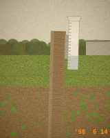

Wendell's
Rain Gauge Wendell's
Rain Gauge
Wendell's
Rain Gauge Wendell's
Rain Gauge 
Hello. My name is Wendell Haack. I carried rural mail out of the Hooper post office for 31 years and retired in 1996. Since April of 1971 I have read the rain gauge on the fence post by our garden every morning at 7 AM and wrote it down in a ledger. That is going on 29 years and I have missed 41 days, mostly when we went to see our daughter in Colorado Springs and the neighbor forgot.My grandson Travis put this page up for me in 1998 so the numbers would be some place besides the kitchen drawer. I am still learning how to work it so if something is wrong let me know.
If you keep a rain gauge too I would like to hear what you got. Especially if you are west of here, because that is where it comes from.
Readings are in inches. T = trace (less than .01). Snow is melted down on the stove and counted as water.
(The picture is the gauge, June 1998. It is the plastic kind from Farm King. I had a metal
one before that until the hail got it.)
| Month | 1999 | My Average 1971-1998 | Biggest day |
| Jan. | 0.62 | 0.68 | .31 on the 22nd |
| Feb. | 0.71 | 0.81 | .40 on the 11th |
| March | 1.94 | 2.05 | .88 on the 30th |
| April | 3.88 | 2.79 | 1.12 on the 17th |
| May | 4.71 | 4.31 | 2.35 on the 8th (hail) |
| June | 5.02 | 4.12 | 1.60 on the 21st |
| July | 3.10 | 3.48 | .94 on the 4th (rained out the fireworks) |
| Aug. | 2.46 | 3.36 | 1.05 on the 9th |
| Sept. | 1.33 | 2.92 | .70 on the 26th |
| Oct. | 0.88 | 1.98 | .52 on the 2nd |
| Nov. | 0.21 | 1.24 | .14 on the 30th |
| Dec. | 0.54 | 0.83 | .29 on the 17th (snow) |
| TOTAL | 25.40 | 28.57 |
Things I wrote in the margin
 May 8 1999 -- 2.35 in. between supper and midnight. Hail the
size of peas for about 10 min. Lost all the tomato starts and had to buy more at the co-op. Gauge ran over
and I had to measure the overflow can. Biggest day since July 1993.
May 8 1999 -- 2.35 in. between supper and midnight. Hail the
size of peas for about 10 min. Lost all the tomato starts and had to buy more at the co-op. Gauge ran over
and I had to measure the overflow can. Biggest day since July 1993.
 Fall 1999 -- Dry. November .21 is the driest November in my
book since 1976. Beans came out good anyway, Dale got 52 on the south quarter.
Fall 1999 -- Dry. November .21 is the driest November in my
book since 1976. Beans came out good anyway, Dale got 52 on the south quarter.
 Jan. 1 2000 -- Y2K came and went. The rain gauge does not have
a computer in it. 0.00
Jan. 1 2000 -- Y2K came and went. The rain gauge does not have
a computer in it. 0.00
Other Years
I am typing in the old ledgers a few at a time in the evenings. So far I have:
1998 1997 1996 1993
(the wet year, 41.88!) 1974
The rest are coming. There is 29 of them so it will be a while.
Top 10 wettest days 1971-1999
Weather Links
You are visitor number
since Sept. 6, 1998. Thank You!
E-mail: whaack@juno.com
Last updated Jan. 3, 2000
This page is hosted by GeoCities. Get your own Free Home Page